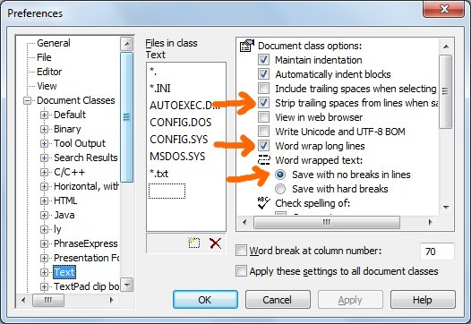

[BACK]
There are four global configuration variables required in order for anything in XBN-PhraseExpress to function properly. These values are set during XBNPE installation.
{#insert zROOT_DIR_XBNPE_MAIN}\xbnpe_xkp\configuration\xbnpe__global_config_edit_this.px.txtXBNPE: Parent folder >
XBN-PhraseExpress >
XBNPE-XKP: X-key-presses & basic utilities >
Directory and global configuration| Variable | Description and requirements |
zROOT_DIR_XBNPE_PARENT |
The full path of the parent-directory in which XBN-PhraseExpress is installed. Further details
Directory-path variable requirementsAll directory-path values, in this or any directory-configuration variables throughout XBN-PhraseExpress:
|
zWIN_DIR_DESKTOP |
Your Windows desktop directory-path. Further details |
zzTPTxtDefaultWordWrapOnOrES |
Plain-text phrase-files are named with the postfix ".px.txt" and are therefore included in TextPad's "Text" document class. If the default word-wrap state for the text document class is
|
zzTPTxtDefaultStripTrailingWSOnOrES |
If the Text document class setting "Strip trailing spaces from lines when saving" is
(Screenshot below) |
Warning: Any processes in XBNPE that save files (particularly the larger build-processes, such as TPKC) will fail unless "Word wrap text > Save with no breaks in lines" is selected.

[top] XBNPE: Global-config-var: zROOT_DIR_XBNPE_PARENTThe full path of the parent directory in which xbnpe source-code root was installed. Such as:
C:\programming\phrase_express\
Using this example, the TextPad built-in command (TPKC) project-root is
C:\programming\phrase_express\xbnpe\main\textpad__tpkc\
This value is critical to most XBN-PhraseExpress projects. For example, neither the XKP or TPKC-build processes can function without this.
zROOT_DIR_XBNPE_PARENT has three main sub-directories:
[BACK] ..._PARENT main sub-directory: zROOT_DIR_XBNPEzROOT_DIR_XBNPE is a directory-variable is derived from
zROOT_DIR_XBNPE_PARENT
This directory contains all non-auto-generated code and documentation.
Specifically, it is equal to
{#insert zROOT_DIR_XBNPE_PARENT}xbnpe\
For example:
C:\programming\phrase_express\xbnpe\
Do not edit the value of zROOT_DIR_XBNPE !
[BACK] ..._PARENT main sub-directory: zROOT_DIR_XBNPE_MAINzROOT_DIR_XBNPE_MAIN is a directory-variable is derived from
zROOT_DIR_XBNPE
This is where the main and hard-coded XBNPE-code resides (I directly create these phrases).
Specifically, it is equal to
{#insert zROOT_DIR_XBNPE}main\
For example:
C:\programming\phrase_express\xbnpe\main\
Do not edit the value of zROOT_DIR_XBNPE_MAIN !
[BACK] ..._PARENT main sub-directory: zROOT_DIR_XBNPE_AGzROOT_DIR_XBNPE_AG is a directory-variable is derived from
zROOT_DIR_XBNPE
This is where the main auto-generated phrases are stored (these phrases are created by other phrases).
Specifically it is equal to
{#insert zROOT_DIR_XBNPE}auto_generated\
For example:
C:\programming\phrase_express\xbnpe\auto_generated\
Do not edit the value of zROOT_DIR_XBNPE_AG !
[top] XBNPE: Global-config-var: zWIN_DIR_DESKTOPOptional. I happen put test data on the desktop. If your Windows user-name, and therefore your desktop path, has spaces in it, it conflicts with the no-double-quotes rule, and therefore this value won't be usable to you.
Example value:
C:\Users\jeffy\Desktop\
Tip: To get your desktop's path, right-click on any non-standard file on your desktop (not the Recycling Bin or Network Neighborhood, for example), while holding the shift-key. Select "Copy as path", paste it into a text document, and eliminate the quotes and file-name.